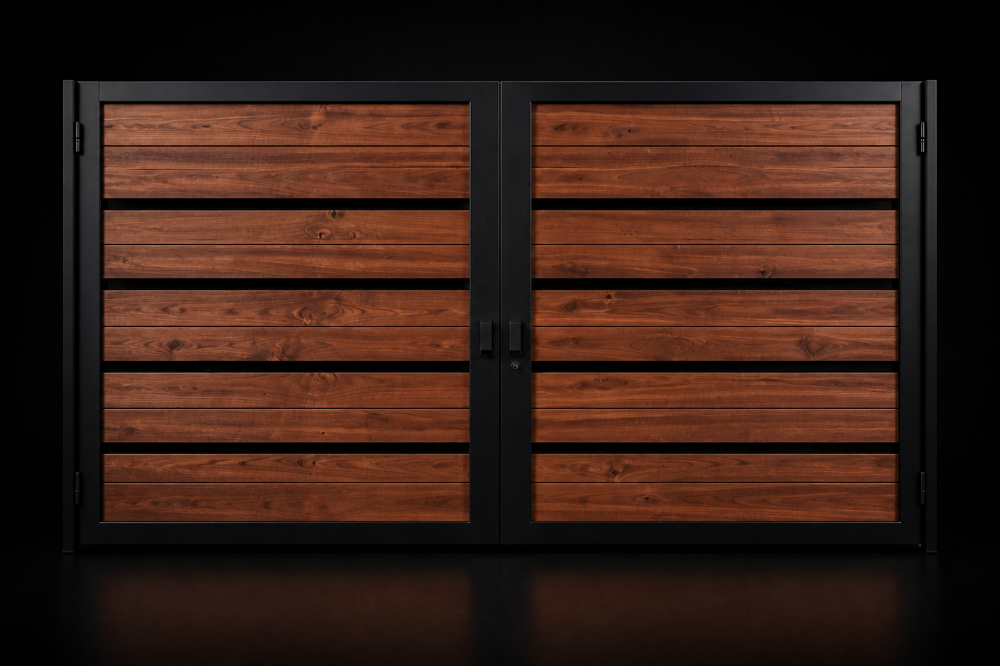

CORREDERO
Cotizar Modelo Lineal C-01
Diseño horizontal de madera y fierro para accesos residenciales modernos.
Precio: A consultarPortones residenciales y comerciales que combinan madera, fierro y soluciones de automatización para un acceso seguro y funcional.

Evaluamos el espacio, tipo de apertura y frecuencia de uso para ofrecer una solución coherente con cada proyecto.
Modelos iniciales con precio a consultar según medidas, materiales y sistema de apertura.
Diseño horizontal de madera y fierro para accesos residenciales modernos.
Precio: A consultarAcceso cálido y robusto con desplazamiento lateral eficiente.
Precio: A consultarUna alternativa sobria para entradas de uso frecuente.
Precio: A consultarApertura tradicional de dos hojas con presencia equilibrada.
Precio: A consultarMadera y acero negro para fachadas de estilo residencial.
Precio: A consultarSolución de aspecto sólido para accesos amplios.
Precio: A consultarComodidad y control para el acceso cotidiano.
Precio: A consultarApertura motorizada para proyectos residenciales modernos.
Precio: A consultarAlternativa preparada para una operación frecuente y segura.
Precio: A consultarEnvíanos las medidas y características generales para evaluar una alternativa.
Ir a contacto